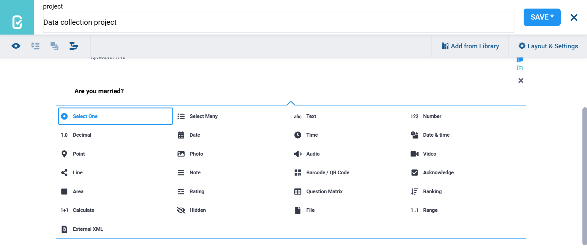
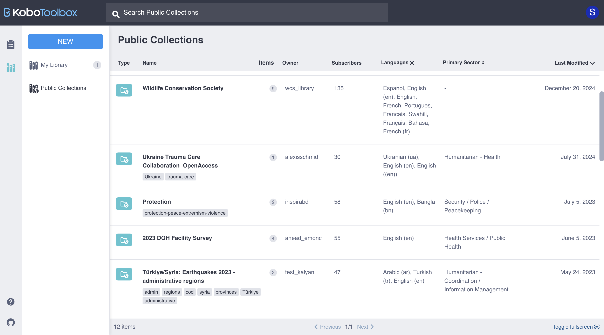

What do you need help with?
Search the knowledge base, browse our resources and visit our forum for more detail information
Search the knowledge base, browse our resources and visit our forum for more detail information
Last updated: 14 Mar 2022
KoboToolbox is a platform for field data collection in challenging environments. Our software is free and open source and works both online and offline. Most of our users are people working in humanitarian crises, aid professionals and researchers working in developing regions. Our team of developers, designers, support staff and researchers work tirelessly from countries around the world to keep the tool accessible to everyone.
KoboToolbox was built for humanitarian aid professionals but can be used to suit any of your data collection needs. Our users range anywhere from governmental organizations, search and rescue teams, UN agencies, large and small NGOs, to business consultancies, accounting firms and individuals.
KoboToolbox allows you to easily develop digital data collection forms that work on both mobile devices and web browsers.
Creating forms is quick and simple, thanks to our easy-to-use online form builder. You can also use the XLSForm specification and upload your files directly to the platform, which will provide you with the flexibility to build more complex and customizable forms. You can read more about getting started here.
Completed forms can then be shared online or downloaded onto mobile devices, ready to use for data collection. The KoboCollect Android app allows for offline data collection, storing recorded data in the device until an internet connection is available and the data can be sent to the server. This ensures that even in network-constrained environments, data, from text to video to GPS coordinates, can be collected without internet connection.
In addition to the KoboCollect app, KoboToolbox also allows for online and offline data collection through the web browser using any device or operating system, powered by Enketo web forms, and can work on any mobile phone, tablet or computer. Simply share the URL of your form and you’ll be able to start collecting data.
KoboToolbox allows you to manage your data by aggregating the data collected from different devices, accessible through the KoboToolbox interface. This data can then be downloaded into multiple formats for use in applications such as Excel, SPSS or GIS software.
In addition to being able to access your data by simply downloading it, KoboToolbox offers a robust API (application programming interface) and REST services. This allows other applications to access the data in real-time, enabling you to further process and analyse your data according to your needs.
KoboToolbox is developed by the Harvard Humanitarian Initiative and led by co-founders Phuong Pham and Patrick Vinck, who created the first iteration of KoboToolbox back in 2009 in response to their own research needs while working in the field.
Today, we are a fully independent Non-Profit Organization, Kobo Inc., with a team of more than 15 professionals working hard to make these tools useful and accessible to everyone. To learn more about our organization please visit our About Us page.
KoboToolbox is funded entirely through generous grants and donations from our partners.
If you are interested in contributing towards our on-going efforts, please visit our donation page or reach out to us at info@kobotoolbox.org.
Our platform is open source and entirely free to use for humanitarian organizations, and free up to 10,000 submissions / month and 5GB file storage for anyone else . We work hard to make this possible, and collaborate with many partners to keep KoboToolbox available to everyone at no cost.
We believe that organizations, particularly those dedicated to research, humanitarian efforts or any other social good, should be able to collect data at scale in a reliable manner. Financial resources should not be a barrier to this important work, and to that purpose, we prioritize maintaining free access to our tool.
You can learn more about which KoboToolbox server to choose here.
Projects in KoboToolbox can be created in any language as well as in multiple languages. Adding translations is entirely manual, and there are no limitations to what languages or number of translations can be added.
Our user interface currently supports English, French, Spanish, Arabic, Hindi, Kurdish, and Chinese – thanks to a generous team of community volunteers. If you have found any issues with these translations, or would like to see the interface available in a new language, please consider volunteering your skills to support our translation efforts by getting in touch with us!
KoboToolbox is used by many organizations and researchers in a variety of contexts all over the world. The following are some examples of the work we support:
Purposeful (Sierra Leone): Supporting girls’ empowerment during COVID-19
UNDP (Global): Fighting malaria during a pandemic
United Kingdom: Understanding how we interact with nature
Pakistan: Real-time monitoring of immunization
KoboToolbox uses a wide set of components that make developing forms simple and collecting and managing data possible.

The formbuilder allows you to design forms easily and intuitively, without the need to use complex syntax.
The formbuilder supports a range of question types such as text, numbers, multiple choice, media, GPS and many others.
You can also add form logic such as calculated fields, skip logic and validation criteria through the formbuilder interface. Forms created using XLSForm and uploaded to KoboToolbox can also be further edited in the formbuilder.

The question library allows users to save and organize questions that can then be added to other projects. The library also acts as a public repository of questions, blocks of questions and complete form templates contributed by other users and available for everyone to use.

The KoboCollect Android app is used for collecting data on mobile devices. Once the app has been configured to connect to the form author’s KoboToolbox account, forms can be downloaded into the app ready for data collection. These forms will work even without an internet connection. Once the mobile device has an internet connection, the collected data can then be transferred to the KoboToolbox platform.
You can download the latest version of KoboCollect on the Google Play Store here.

In addition to the KoboCollect mobile application, data can also be collected using Enketo web forms.
These forms can be sent to respondents for online data entry on their mobile devices, laptops or desktops. As with KoboCollect, they can also be used for offline data entry, particularly in cases where responses will be recorded by enumerators (data collectors), instead of the respondents themselves. While responses can be stored offline, the device will initially need an internet connection to load the form.

KoboToolbox allows for data to be collected from multiple devices. This data can then be reviewed, edited and downloaded by the account owner or those given permission.
Data collected for each project can be managed in the platform’s data table view, where each submission received will be displayed as a row. Additionally, your data can be visualized as part of a report, where different options are available to create multiple charts and summary tables.
If you collected GPS points as part of your project, you can also view the data plotted on a map.
Data can be downloaded in multiple formats and using customizable settings. In addition, you have the ability to download all media collected as part of your project such as audio, videos and photos.

The KoboToolbox platform has a number of features that allow users to manage other aspects of their project. For example, you can share projects with other users within the same KoboToolbox server, control which parts of the project other people can have access to using granular sharing permissions, and also who can send submissions to the project.
You are also able to pull data from one project into another to develop advanced projects with case management capabilities.
The API enables you to pull data from KoboToolbox directly into other applications. This feature allows for easy integration with common software such as Excel, PowerBI and others, permitting real-time sharing of data with these applications, without having to download any files.
Intermediate and advanced users may use this feature to build interactive data dashboards and other data-driven applications.
Did you find what you were looking for? Was the information clear? Was anything missing?
Share your feedback to help us improve this article!